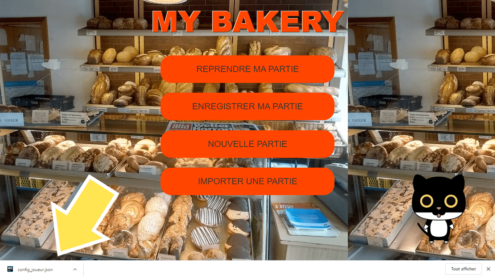
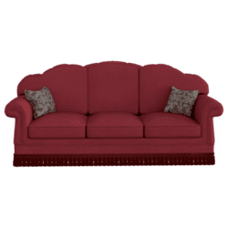

Prise en main de My Bakery
My Bakery est un jeu éducatif où le joueur dirige une boulangerie et vend des viennoiseries.
Son but est d'apprendre tout en s'amusant à manier les additions, les multiplications et les soustractions, et progresser en calcul mental.
On peut améliorer sa boulangerie en remplaçant les anciennes fenêtres et la porte par de nouvelles et en achetant de nouveaux meubles au magasin de décoration!
Un tutoriel est mis à disposition à chaque nouvelle partie pour aborder les différentes fonctionnalités du jeu.
Précisons aussi...
My Bakery suit la progression du joueur et lui propose des exercices mathématiques adaptés à son niveau.
My Bakery sauvegarde automatiquement la partie du joueur! Il peut donc fermer le jeu et l'ouvrir un autre jour sans perdre sa progression.
De plus, le joueur peut continuer de jouer sur la même partie d'un appareil (ordinateur, téléphone) à un autre...
Démarrage du jeu
Création d'une partie
Le joueur doit seulement entrer son prénom ou un pseudo pour commencer à jouer!
Téléchargement de sa partie
Télécharger sa partie permet de continuer à jouer depuis, par exemple, un autre ordinateur sans perdre sa progression!
Pour cela, il faut cliquer sur "ENREGISTRER MA PARTIE" comme l'affiche l'image ci-dessous:

Un fichier sera alors téléchargé :

Il suffira ensuite de le récupérer et de l'envoyer sur un autre appareil (téléphone, ordinateur) par email ou par clé USB, puis de suivre l'étape qui suit.
Importation d'une partie
Cliquer sur IMPORTER UNE PARTIE et choisir le fichier précedemment téléchargé :
Sélectionner le fichier config_joueur et l'ouvrir : Cliquer ensuite sur l'écran pour commencer à jouer!

Comment jouer

Dans la boulangerie, on reçoit des clients qui nous demandent une liste de produit et on doit calculer combien ils nous doivent.
On a trois tentatives pour trouver la bonne réponse.
Si on la trouve, on gagne une pièce. On peut ensuite dépenser dans le magasin de décoration les pièces cumulées et acheter un bouquet de fleur, un canapé...



Haut de page